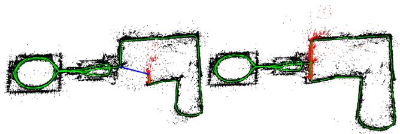
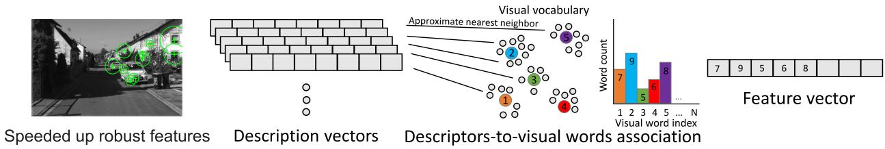
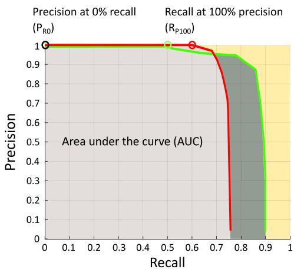

导语 🔁 上节课（0013）说"鲁棒图优化出现后，错回环没那么可怕了"。但 2022 年的这篇回环检测综述却斩钉截铁地说"一个假阳性就能让 SLAM 彻底崩"。两篇论文打架了吗？本课带你拆开回环检测流水线的真实结构，并把这个随后端鲁棒性演进而改变的认知对照讲透。
🎯 主题：视觉回环检测的系统结构、特征谱系与评测指标👥 作者：Konstantinos A. Tsintotas, Loukas Bampis, Antonios Gasteratos📅 2022 · The Revisiting Problem in SLAM: A Survey on Visual Loop Closure Detection
"sensory data representations, though appropriate for image retrieval, may not perform effectively in visual loop closure detection and vice versa." 翻译：适合图像检索的表示，未必适合回环检测，反之亦然。原因在于两者操作的集合不同——图像检索面向"宽泛、未必相关"的大型数据库，目标是搜出相似物体（可能和原图不是同一地点）；而回环检测只在"机器人自己走过的图"里找同一地点。所以一个图像检索模块通常只是回环检测流水线的第一部分，但两者的根本目标不同。

原图注（Fig. 1）： A representative example of a pose graph constructed under a visual loop closure detection mechanism: map as generated initially (left) and subsequently a loop closure detection (right) in the New College dataset. When loops are detected, the system's accumulated drift error and pose uncertainty are bounded, allowing consistent map generation.（视觉回环检测机制下位姿图的典型示例：左为初始生成的地图，右为随后发生一次回环检测后的地图（New College 数据集）。检测到回环后，累积漂移误差与位姿不确定性被约束住，回环两侧的地图被大幅校正。） 怎么看这张图： 左图里机器人绕一圈后两端没接上，留下一道弯弯的"累积漂移"；右图一旦回环检测把两端认成同一地点，绿色轨迹被"拉直"，整张地图的误差都跟着校正。这就是回环检测存在的根本意义——兜住里程计的累积误差。
原图注（Fig. 5）： Schematic structure depicting the essential parts of a visual loop closure detection system. The image is processed to extract the visual representation (trained data like visual bag of words, or not), the database is constructed incrementally, and when a query arrives its representation is compared against the database to decide whether the robot revisits a known area.（回环检测系统基本组成部分的结构示意图：图像被处理以提取视觉表示（用训练好的视觉词袋或不用），数据库随新数据增量构建；查询到来时，其表示与数据库比较，以判断机器人是否重访已知区域。） 怎么看这张图： 它把上面说的"四段"画成了一条流水线：相机图像 → 提取表示（特征提取）→ 增量维护数据库（环境表示 + 位置索引）→ 查询图与库比较并决策。注意"数据库随新图像增量更新"——因为回环是稀疏事件，大部分时候新图只是被加进库里。这张图就是理解全文结构的"地图"。
逐段快速定位（方便你回原文跳读）：
① 特征提取（Sec. V）
手工全局/局部 + 学习型四范式，见第 3 节。
② 环境表示 / Looking Behind（Sec. VI）
single-image-based vs sequence-of-images-based；子图划分有固定长度 vs 动态（co-visibility / 特征一致性 / 时序模型 / 粒子滤波）。
③ 位置索引（Sec. VI-B）
滑动窗抑制"刚看过的近邻图"以防假阳性；inverted indexing vs exhaustive search。
原图注（Fig. 6）： Instances of hand-crafted feature descriptors, both (a) global (based on the entire image) and (b) local (based on regions-of-interest). (a) Whole image descriptors process each block regardless of context, e.g., HOG. (b) Local features like SURF are indicated in salient parts and subsequently described.（手工特征描述子实例：(a) 全局（整图），如 HOG；(b) 局部（基于感兴趣区域），如 SURF。） 怎么看这张图： (a) 把整张图压成一个向量，简单高效但怕遮挡、怕视角变化；(b) 只挑图像里"显著"的斑块（如 SURF 角点）各自描述，天然带几何信息、抗局部遮挡。一句话：全局快但脆，局部慢但稳——这决定了不同场景该选谁。
这里必须讲清一个术语：视觉词袋（BoW, Bag of visual Words）。它借鉴文本处理——把局部特征（如 SURF）量化到一本"视觉词典"里，每张图表示成"各视觉词出现频次"的向量。由于某些词出现得更频繁，原文用 TF-IDF（词频-逆文档频率）给每个视觉词加权：在单张图里出现多（TF 高）但整本词典里很常见（IDF 低）的词会被压低权重，稀有的判别性词被抬高。Fisher Kernels、VLAD 都是 BoW 的改进版。

原图注（Fig. 7）： The visual bag of words model based on a previously trained visual vocabulary. SURF descriptors are assigned to the most similar "visual word", outputting a 1×N vector of word frequencies.（基于预训练视觉词典的视觉词袋模型：SURF 描述子被指派到最相似的"视觉词"，输出 1×N 向量表示各视觉词出现频次。） 怎么看这张图： 左边是一张真实图像里提取出的若干 SURF 斑块；中间是把每个斑块描述子"投票"到词典里最像的那个视觉词；右边那根长条就是这张图的 BoW 表示——第 k 个格子的高度 = 第 k 个视觉词在这张图里出现了几次。回环检测时就比这两根长条的相似度。
4. 指标精确定义与"假阳性代价"
评测三件套：数据集、布尔型真值矩阵（行列是不同时刻的观测 (i,j)，1 表示 i 与 j 之间发生回环）、评价指标。四类标签：
PR 曲线靠改变"接受正匹配的参数"（典型是回环假设阈值）扫出；AUC（PR 曲线下面积）取值 0–1，但不保留曲线形状信息，包括"precision 是否曾达到 100%"；Average Precision 把曲线压成单值；RP100（recall at 100% precision） 原文称 "the most common performance indicator"，表示零假阳性下的最高召回，缺陷是曲线达不到 100% precision 时该指标不可定义；EP（extended precision） = (PR0 + RP100)/2；另有 recall at 95% precision（因为少量误检可由 SLAM 后端优化验证剔除）。

原图注（Fig. 11）： An illustrative example of two hypothetical precision-recall curves. The highest possible recall for a perfect precision (RP100) is shown by the red and green circles. The precision at minimum recall (PR0) is depicted by the black circle, while the gray areas denote AUC. The red curve is better than the green one, even though the green curve's AUC is larger.（两条假设 PR 曲线示例。红/绿圈标出"完美 precision 下的最高 recall"（RP100）；黑圈为"最小 recall 处的 precision"（PR0）；灰色区域为 AUC。红曲线更优，尽管绿曲线的 AUC 更大。） 怎么看这张图（整节指标章节的封面）： 红曲线在 RP100（红圈）约 0.6、绿曲线约 0.4——红的"零假阳性召回"更高，所以红更好。但注意绿曲线的 AUC（灰面积）反而更大！这说明只看 AUC 会误导，必须用 RP100、EP 等能反映"precision 能否到顶"的指标来补。这正是回环检测最看重的维度。
🔥 "假阳性代价"原文原话（三类直接引用）
Sec. I："Since an erroneous loop closure detection might turn out to be fatal for any SLAM framework, a reliable pipeline should detect a small number or preferably zero false-positives while still avoiding false-negatives."（错误回环对 SLAM 可能是致命的，可靠流水线应检测极少、最好零个假阳性，同时避免假阴性。）
Sec. VIII-A：RP100 "is a critical indicator since a single false-positive detection can, in many cases, cause a total failure for SLAM."（单个假阳性在许多情况下就能让 SLAM 彻底失败。）
漏检代价较小（Sec. VII-B）："Most pipelines pay a high price for indicating a loop closure, but there is minor harm if one is missed since many chances in the following images are afforded due to the existing temporal continuity."（多数流水线为"指认一次回环"付出高代价，但漏掉一次危害很小，因为时序连续性会提供后续很多补救机会。）
0013（2024 VPR tutorial）： "since the advent of robust graph optimization techniques for SLAM [33], the avoidance of wrong loop closures has become less relevant. With robust graph optimization, it is more important to find enough correct loop closures (TP) than to avoid wrong loop closures (FP)."（鲁棒图优化出现后，避免错回环已不那么重要；找到足够多正确的回环比避免错的更关键。）
0014（2022 回环检测综述）： "a single false-positive detection can, in many cases, cause a total failure for SLAM."（单个假阳性在许多情况下就能让 SLAM 彻底失败。）
结论与开放问题（Sec. X）： 回环检测是 SLAM 最难的课题之一，是地图一致性的前提；手工特征时代的方法在复杂动态环境下表现不足，CNN 表示更有前景。但深度方法算力代价高（Sec. IX-D 原话："although impressive outcomes have been achieved by utilizing deep learning, such approaches are yet computationally costly"）。三条未来方向：① 面向动态环境 + 变化条件 + 动态场景的流水线；② 剧烈视角变化下的性能提升；③ 数据库管理改进以支撑长期建图。另加一条展望：把人类中心的语义信息（human-centered semantics）纳入回环机制。
📝 本课的 OCR 勘误
首段严重崩坏： md 写作 "OOP closure detection, which has long been acknowlneous… localization…"，应为 "LOOP closure detection, which has long been acknowledged … in simultaneous localization (SLAM)…"（回环检测长期被视为 SLAM 中最具挑战的任务之一）。
图像检索在一个不必然相关的大库里找相似物体（可能和原图不是同一地点）；回环检测只在机器人自己此前录过的图像集里找"同一地点"。原文："sensory data representations, though appropriate for image retrieval, may not perform effectively in visual loop closure detection and vice versa."
把 0014 的 "a single false-positive … total failure for SLAM" 与 0013 的 "robust graph optimization … avoidance of wrong loop closures has become less relevant" 放在一起，说明为何二者不矛盾。
展开查看答案
二者反映不同时代的 SLAM 后端假设：2022 综述默认后端不够鲁棒，故把"零假阳性"当铁律；2024 tutorial 站在鲁棒图优化已能剔除部分错回环的肩膀上，主张多找正确回环（TP）、容忍些许 FP。指标偏好随后端鲁棒性演进而改变，并非真矛盾。
为什么本文认为深度学习方法在回环检测里"算力代价高"？这对实际部署意味着什么？
展开查看答案
原文 Sec. IX-D："although impressive outcomes have been achieved by utilizing deep learning, such approaches are yet computationally costly"——网络越大，训练与推理的算力和存储消耗越高，难以满足机器人实时/机载约束。意味着实际系统常需模型压缩、 hierarchical 结构或 GPU 加速来折中精度与实时性。